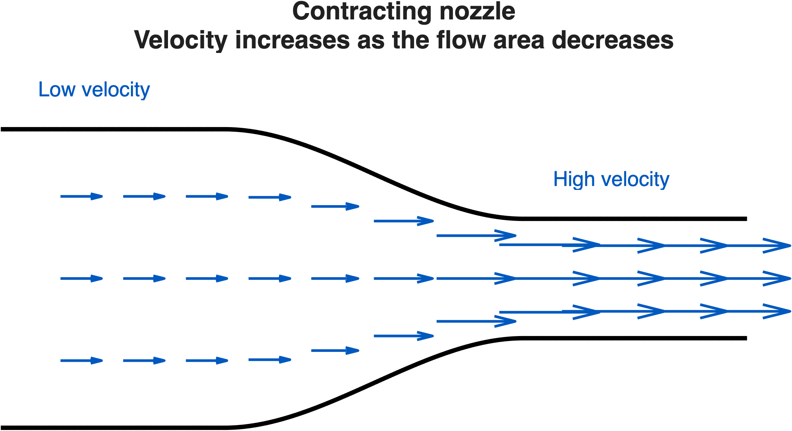
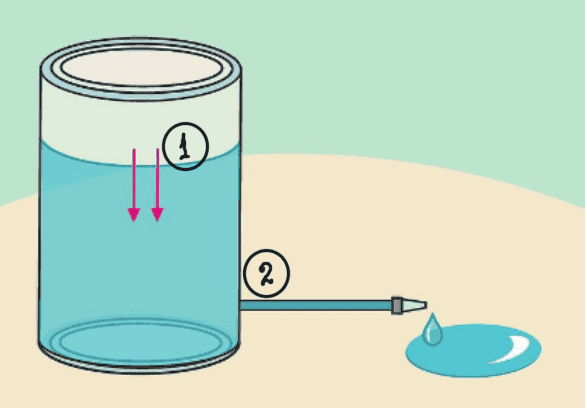

Fluid Mechanics Course
Bernoulli Equation

Francesco Ferri
AAU BUILD
Learning Objectives
- Derive the steady Bernoulli equation from Newton's second law
- Interpret pressure head, velocity head, and elevation head
- Identify the assumptions and limitations of the equation
- Apply Bernoulli’s principle to practical engineering problems
- Extend the ideas to unsteady flow
Why Bernoulli Matters

The velocity increases through the contraction. What pressure difference is required to produce this acceleration?
from kinematics to dynamics
Bernoulli's equation relates the acceleration to the accompanying pressure change.
Introduction to Bernoulli
Bernoulli's Principle
Bernoulli’s principle relates pressure, velocity, and elevation in a flowing fluid.
It applies to steady, incompressible, inviscid flow along a streamline.
- Steady flow \(\rightarrow \frac{\partial}{\partial t}=0\)
- Incompressible fluid \( \rightarrow \rho=const\)
- Negligible viscosity \( \rightarrow \mu=0\)
- Flow along a streamline
Derivation
Small Fluid Particle Along a Streamline

Apply Newton's Second Law on the fluid particle:
$$\sum \delta F_s = \delta m a_s $$
Along a streamline (only tangential direction s):
$$a_s = \frac{dV}{dt} = \frac{\partial V}{\partial s}\frac{ds}{dt}=V\frac{\partial V}{\partial s}$$
Steady: not time derivative and streamline/pathline coincide (fluid particles stay in the streamline).
Small Fluid Particle Along a Streamline
Inviscid (frictionless): only gravity and pressure forces.
Gravity: $$\delta W_s = - \gamma \delta \forall sin \theta$$
Pressure: $$\delta F_{ps} = -\frac{\partial p}{\partial s} \delta \forall$$
from pressure at either ends of the fluid volumes: $$\delta F_{ps} = (p-\delta p_s) \delta n \delta y - (p+\delta p_s) \delta n \delta y =-2 \delta p_s \delta n \delta y$$
and using first order Tyalor expansion \( \left( \delta p_s \approx \frac{\partial p}{\partial s} \frac{\delta s}{2} \right) \)
Small Fluid Particle Along a Streamline
Adding all the force contributions:
$$\sum \delta F_s = \delta F_{ps} + \delta W_s = \left( -\gamma sin \theta - \frac{\partial p}{\partial s} \right) \delta \forall$$
which gives: $$-\gamma sin \theta - \frac{\partial p}{\partial s} = \rho V \frac{\partial V}{\partial s}$$
along a streamline the dispalcement has no normal component \( dn=0 \) $$\rightarrow dV = \frac{\partial V}{\partial s} ds + \frac{\partial V}{\partial n} dn= \frac{\partial V}{\partial s} ds$$ same apply with p.
and \( sin \theta = \frac{dz}{ds} \)
Small Fluid Particle Along a Streamline
removing ds and diving by \(\rho\):
Integrating along the streamline and assuming incompressible flow (constant \( \rho \) ) to simplify the pressure integral.
Different Forms
Energy per unit volume,
or pressure form
p + ρ V²/2 + ρgz = C
Unit: Pa
Energy per unit mass
p/ρ + V²/2 + gz = C
Unit: J/kg
Energy per unit weight, or head form
z + p/γ + V²/(2g)=C
Unit: m
Physical Interpretation
Physical Interpretation of Bernoulli’s Equation
Each term represents mechanical energy per unit weight of fluid and therefore has units of length.
Pressure head
Capacity of pressure forces to do work on the fluid.
Velocity head
Kinetic energy associated with fluid motion.
Elevation head
Gravitational potential energy associated with elevation.
Along a streamline, these contributions can change, but their sum remains constant for ideal flow.
Bernoulli’s Equation Between Two Points
Because the total head remains constant along a streamline, Bernoulli’s equation can be applied between two points:
Point 1
- Pressure: \(p_1\)
- Velocity: \(V_1\)
- Elevation: \(z_1\)
Point 2
- Pressure: \(p_2\)
- Velocity: \(V_2\)
- Elevation: \(z_2\)
Contracting Nozzle
Applications
Application 1: Flow Through a Contraction
Apply Bernoulli between sections 1 and 2:
For a horizontal pipe:
- Continuity gives \(A_1V_1=A_2V_2\)
- Smaller area produces higher velocity
- Higher velocity corresponds to lower pressure
Engineering use: determine flow rate from a measured pressure difference.
Application 2: Discharge from a Tank
Apply Bernoulli between the free surface and the outlet:
For a large tank open to the atmosphere:
- \(p_1=p_2=p_{\mathrm{atm}}\)
- \(V_1\approx0\)
- \(z_1-z_2=h\)
The ideal discharge is \(Q_{\mathrm{ideal}}=A_2\sqrt{2gh}\).

Engineering use: estimate outlet velocity, discharge, and tank emptying time.
Common Engineering Uses of Bernoulli’s Equation
Flow Measurement
- Venturi meters
- Pitot tubes
- Orifice meters
Fluid Systems
- Tank discharge
- Nozzles and contractions
- Siphons
Building Engineering
- Airflow through ducts
- Wind-pressure measurements
- Ventilation openings
Common principle: use changes in pressure, velocity, and elevation to determine an unknown flow quantity.
Limitations
When Bernoulli is Not Exact
- Real fluids have viscosity, so head losses occur
- Compressibility matters at high Mach numbers
- Unsteady flows require additional terms
- Rotational flows need careful interpretation along streamlines
Extension to Real Flows: Energy Losses
Real flows: viscosity and fittings dissipate mechanical energy. Extended Bernoulli’s equation - added head-loss term.
Pipe friction
Energy loss along a straight pipe.
Fittings and components
Losses from bends, valves, entrances and contractions.
A fitting can be represented by an equivalent pipe length:
Total effective length: \(L_{\mathrm{total}}=L+\sum L_{\mathrm{eq}}\)
Extended Bernoulli Equation: Pumps and Fittings
A pump adds mechanical energy to the fluid, while pipes and fittings remove mechanical energy through losses.
Pump head
Mechanical energy added to the fluid by the pump.
Pipe and fitting losses
Energy dissipated by straight pipes, bends, valves and other fittings.
The pump must provide enough head to overcome elevation, pressure differences and energy losses.
Extension to Unsteady Flow
In unsteady flow, velocity at a fixed location changes with time:
The acceleration along a streamline contains both local and
convective contributions.
As a consequence, Newton’s second law along a streamline gives:
Integrating Newton’s second law along the streamline gives:
The additional integral represents the effect of local, time-dependent acceleration. Used in: Water Hammer effect and other transient flows, rivers surge, wave propagation and free surface flows (sloshing)
Summary
Bernoulli’s equation is derived from conservation of energy for an inviscid, steady, incompressible flow.
It is widely used in hydraulics, aerodynamics, and flow measurement.
Its main limitations are viscosity, compressibility, unsteadiness, and rotational effects.
Extensions to the Bernoulli's equation are possible, but they limit the usability of the equation.